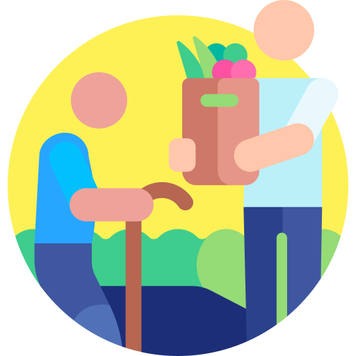
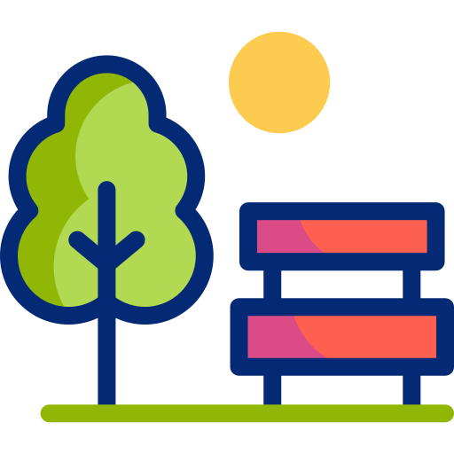

BESØKSVENN
I hjemmet eventuelt institusjon. Vi kan lese avis/ukeblad med deg, spille spill sammen, samt lytte og være samtalepartner. Vi går gjerne på Cafè-besøk og kulturelle og sosiale aktiviteter sammen.
Eldrehjelperne UB er en ungdomsbedrift ved Nydalen videregående skole i Oslo. Vår bedrift ønsker at alle skal få den omsorgen de trenger - uansett alder
Bli kjent med ossEldrehjelperne er ikke som andre hjemmetjenester. Vi setter glede først.
Derfor tilbyr vi tjenester som:
I hjemmet eventuelt institusjon. Vi kan lese avis/ukeblad med deg, spille spill sammen, samt lytte og være samtalepartner. Vi går gjerne på Cafè-besøk og kulturelle og sosiale aktiviteter sammen.

Som gir trygghet i forbindelse med lege, sykehus og butikk-besøk. Handleturer sammen med deg eller for deg. Vi går gjerne turer med deg, eller drar på konsert.

som utfører huslige gjøremål eller hagearbeid sammen med deg eller for deg. Vi kan gjøre planting / hagearbeid samt snømåking. I tillegg kan vi vaske bad/støvsuge eller annet renholdsarbeid.
Lenge siden du har gjort noe GØY?
- Vi kan ta deg med på KONSERT!
Eller trenger du hjelp med MOSJON?
- La oss gå en
TUR sammen!

Send oss en mail eller ring oss så kan vi sammen finne en avtale som passer dine behov
Tlf: 450 17 140akselbistad@gmail.com